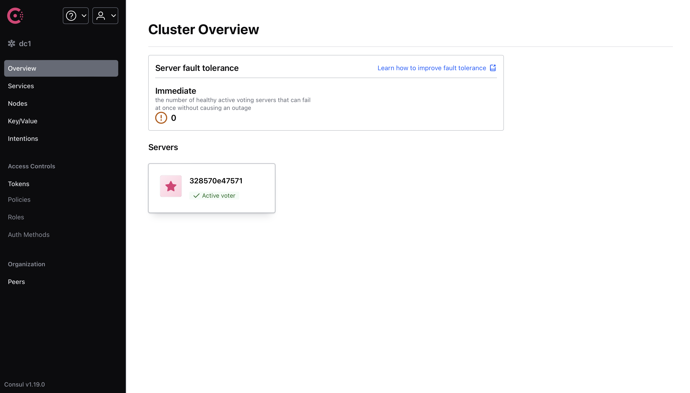

Spring Cloud 速成 Ch3 Consul 服务注册与发现
第三章开始，我们开始学习 Spring Cloud，因此标题也改成了 Spring Cloud 速成。
本笔记 Spring Cloud 部分参考了尚硅谷阳老师的教程。Spring Cloud 先讲 Consul，Load Balancer，Spring Interface Client 与 OpenFeign，Resilience4j，MicroMeter，Gateway，Seata，WebFlux，Spring Security，KeyCloak，Rabbit MQ，GraphQL，gRPC 然后是 k8s。尽管上面部分技术严格讲并不属于微服务，但它们属于 Spring 的进阶内容，这里就一起讲了。
微服务架构
微服务架构是一种架构风格，它是一种将单一应用程序开发为一组小型服务的方法，每个服务运行在自己的进程中，服务之间通过 HTTP 或者消息队列通信。每个服务都有自己的数据库，独立部署，独立升级。
例如，像是淘宝这样的购物网站，可能有商品服务，订单服务，用户服务，支付服务等等，每个服务都跑在单独的服务器上，这样可以更好地实现高可用，高并发，高扩展。
当然，不用框架也完全可以做到微服务——我现在就用 python 写一个。
from fastapi import FastAPI
api = FastAPI()
@api.get("/secret")
def get_secret():
return "You found my secret!"
if __name__ == "__main__":
import uvicorn
uvicorn.run(api, host="0.0.0.0", port=8000)
from fastapi import FastAPI
api = FastAPI()
@api.get("/secret")
def get_secret(password: str):
if password != "123456":
return
import requests
return requests.get("http://localhost:8000/secret").text
if __name__ == "__main__":
import uvicorn
uvicorn.run(api, host="0.0.0.0", port=8001)
这样就实现了一个简单的微服务架构，一个服务提供密码验证，另一个服务提供秘密信息。
当然，事情不可能这么简单，当系统开始 scale 之后，会有这样几个问题：
- 服务注册与发现：不可能全部使用 ip 地址或者域名来访问服务，因为服务可能会动态变化，需要服务注册与发现。需要一个工具来统一处理服务请求并分发给对应的服务。
- 服务调用：调用其它服务的时候，不可能总是从基础的 http 请求开始，需要一个工具来简化服务调用。
- 负载均衡：如果我们已经把每个服务部署在多个服务器上，那么如果我们需要更大的 qps，一个自然的想法就是部署更多的同一个服务。但是，这样就会创建多个服务事例，例如服务 A1，服务 A2 都提供同一个服务，为了达到更大的 qps，我们应当将所有的请求均匀分发给 A1 和 A2。这就是负载均衡。
- 服务熔断：如果一个服务出现问题，例如超时，那么我们应当停止向这个服务发送请求，而不是一直等待，并进行降级，即减少当前支持的功能，以避免雪崩，即服务集群中一个服务的故障，由于没有做好服务熔断，导致依赖这个服务的其它服务也出现故障，最终一层层向下，直到整个系统崩溃。
- 服务网关：如果我们有多个服务，那么我们应当有一个统一的入口，这个入口可以做一些统一的处理，例如鉴权，限流，日志等等。
Spring Cloud 就是为了解决这些问题而生的。不过，Spring Cloud 是一套又大又复杂的框架，现在也有公司在借助 k8s 加上容器技术实现微服务架构，这样可以不依赖于具体的语言和框架，而是可以自由选择。不过，Spring Cloud 依然是较为流行的微服务框架之一。
今天我们先介绍服务注册与发现。
配置 docker 网络
下文将使用 docker 部署 Consul，但是有个问题，在 macos 和 windows 上，docker本质上是运行在虚拟机上，因此不支持 host 网络模式。Consul 只能发现当前内网的服务，而我们的 java 是运行在宿主机上的。换言之，Consul 只能在 docker 运行的那个虚拟机上找服务，但这个虚拟机被隐藏了起来，不是和宿主机直通的。
当然，如果是虚拟机而不是 docker，那么可以使用 host 网络模式，这样就可以让虚拟机和宿主机在同一个网络上。但是，尽管已经支持了 host 模式，但是在 macos 和 windows 上，docker 本质上还是运行在虚拟机上，因此无法使用 host 模式。准确地说，这个 host 是 mac 和 windows 上那个 docker linux 虚拟机的 host，而非 mac 和 windows 本身。
当然你可以把 java 项目放到 docker 里面，如果在 windows 上，也可以打开 windows container 模式，或者用 linux 系统开发。
一个更好的解决方案是使用 docker-desktop-connector。安装后按照文档配置即可。这样就可以让本机网络和 docker 虚拟机网络联通。又由于 Consul 是绑在虚拟机的 eth0 上的，因此我们可以在本机上连接到虚拟机的 eth0，从而访问 Consul。
Consul 服务注册与发现
启动 Consul
首先，启动 Consul。为了方便开发，我们还一并创建一个数据库。
数据库的 schema 如下：
DROP TABLE IF EXISTS payment;
CREATE TABLE payment (
id SERIAL PRIMARY KEY,
payment_no VARCHAR(50) NOT NULL,
order_no VARCHAR(50) NOT NULL,
user_id INT DEFAULT 1,
amount DECIMAL(8,2) NOT NULL DEFAULT 9.9,
deleted BOOLEAN NOT NULL DEFAULT FALSE,
create_time TIMESTAMPTZ NOT NULL DEFAULT CURRENT_TIMESTAMP,
update_time TIMESTAMPTZ NOT NULL DEFAULT CURRENT_TIMESTAMP
);
COMMENT ON TABLE payment IS '支付交易表';
COMMENT ON COLUMN payment.payment_no IS '支付流水号';
COMMENT ON COLUMN payment.order_no IS '订单流水号';
COMMENT ON COLUMN payment.user_id IS '用户账号ID';
COMMENT ON COLUMN payment.amount IS '交易金额';
COMMENT ON COLUMN payment.deleted IS '删除标志，默认0不删除，1删除';
COMMENT ON COLUMN payment.create_time IS '创建时间';
COMMENT ON COLUMN payment.update_time IS '更新时间';
docker compose 文件如下：
services:
postgres:
image: postgres:12.19
environment:
POSTGRES_USER: user
POSTGRES_PASSWORD: password
POSTGRES_DB: demo
volumes:
- ./schema.sql:/docker-entrypoint-initdb.d/schema.sql
ports:
- 5432:5432
consul:
image: hashicorp/consul:1.19
ports:
- 8500:8500
volumes:
- ./consul:/consul/data
启动后，访问 http://localhost:8500，可以看到 Consul 的界面。

注意，Consul 在 docker 容器关闭时是不会保存数据的。
项目配置
利用我们上一章讲的 gradle，配置一个多模块项目。
根项目使用，
plugins {
id 'java'
id "org.springframework.boot" version "3.2.6"
id 'io.spring.dependency-management' version '1.1.5'
}
allprojects {
repositories {
mavenCentral()
}
ext {
set("springCloudVersion", "2023.0.2")
set("springBootVersion", "3.2.6")
set("lombokVersion", "1.18.28")
set("springdocVersion", "2.5.0")
set("postgresqlVersion", "42.7.3")
}
group = 'io.github.fingerbone'
version = '1.0-SNAPSHOT'
}
subprojects {
apply {
plugin 'java'
plugin 'org.springframework.boot'
plugin 'io.spring.dependency-management'
}
java {
sourceCompatibility = JavaLanguageVersion.of(17)
targetCompatibility = JavaLanguageVersion.of(17)
}
dependencyManagement {
imports {
mavenBom "org.springdoc:springdoc-openapi-starter-webmvc-ui:${springdocVersion}"
mavenBom "org.springframework.boot:spring-boot-starter-web:${springBootVersion}"
mavenBom "org.postgresql:postgresql:${postgresqlVersion}"
mavenBom "org.springframework.cloud:spring-cloud-dependencies:${springCloudVersion}"
}
}
dependencies {
compileOnly "org.projectlombok:lombok:${lombokVersion}"
annotationProcessor "org.projectlombok:lombok:${lombokVersion}"
}
}
注意，这里的 Spring Cloud 和 Spring Boot 版本必须匹配，否则会出现一些问题。兼容性表见 Spring Cloud 文档。
为了方便，引入了 spring doc，加入 spring doc 后，可以访问swagger-ui/index.html来查看接口文档，并进行测试。
此外，org.springframework.cloud:spring-cloud-dependencies是一个包，它包含了 Spring Cloud 的所有依赖，因此只要声明这个的版本，后续使用 Spring Cloud 的任何依赖都会使用这个版本。
第一个子项目只是存放一些公用的类，例如 record，wrapper，enum 等等，不包含任何业务逻辑。目前 builder.gradle 可以留空。
第二个子项目为支付服务，使用 Spring Data JPA 操作数据库，Spring Web 提供 RESTful API。
dependencies {
implementation "org.springdoc:springdoc-openapi-starter-webmvc-ui"
implementation "org.springframework.boot:spring-boot-starter-web"
implementation "org.postgresql:postgresql"
implementation "org.springframework.boot:spring-boot-starter-data-jpa"
implementation project(":commons")
}
微服务架构中，提供服务的服务称为服务提供者，调用服务的服务称为服务消费者。我们还要写一个下单服务，这个服务会调用支付服务。
它的配置如下，
dependencies {
implementation project(":commons")
implementation "org.springframework.boot:spring-boot-starter-web"
implementation "org.springdoc:springdoc-openapi-starter-webmvc-ui"
}
在根项目 settings.gradle 下，使用
rootProject.name = 'demo'
include 'payment'
include 'commons'
include 'order'
这里 include 的是子项目的目录名，而不是项目名。后面使用 project 引入子项目时，使用的是项目名而非目录名。不过默认这两个是相同的。
如果要改项目名，需要，
include "foo"
rootProject.name = "bar"
project(":foo").name = "foofoo"
如果你使用 maven，还要在子项目中添加父项目信息。
支付服务业务逻辑
现在，暂时先不考虑微服务，我们先基于上面的数据库，写一点简单的业务逻辑。这里我们使用 Spring Data JPA 来操作数据库。
注意，下面的 record 类，枚举等应当放在 commons 项目中，其它的应当放在 payment 项目中。
package io.github.fingerbone.record;
import java.math.BigDecimal;
public record PaymentRecord(
Long id,
String paymentNo,
String orderNo,
Integer userId,
BigDecimal amount,
Boolean deleted
) {
}
package io.github.fingerbone.entity;
import io.github.fingerbone.record.PaymentRecord;
import jakarta.persistence.*;
import org.springframework.beans.BeanUtils;
import lombok.Data;
import java.math.BigDecimal;
import java.util.Date;
@Entity
@Data
public final class Payment {
@Id
@GeneratedValue(strategy = GenerationType.IDENTITY)
private Long id;
@Column(name = "payment_no", nullable = false, length = 50)
private String paymentNo;
@Column(name = "order_no", nullable = false, length = 50)
private String orderNo;
@Column(name = "user_id", nullable = false)
private Integer userId = 1;
@Column(name = "amount", nullable = false, precision = 8, scale = 2)
private BigDecimal amount = BigDecimal.valueOf(9.9);
@Column(name = "deleted", nullable = false)
private Boolean deleted = false;
@Temporal(TemporalType.TIMESTAMP)
@Column(name = "create_time", nullable = false, updatable = false)
private Date createTime;
@Temporal(TemporalType.TIMESTAMP)
@Column(name = "update_time", nullable = false)
private Date updateTime;
@PrePersist
private void onCreate() {
createTime = new Date();
updateTime = new Date();
}
@PreUpdate
private void onUpdate() {
updateTime = new Date();
}
public PaymentRecord toRecord() {
return new PaymentRecord(
id,
paymentNo,
orderNo,
userId,
amount,
deleted
);
}
public static Payment fromRecord(PaymentRecord record) {
Payment payment = new Payment();
BeanUtils.copyProperties(record, payment);
return payment;
}
}
package io.github.fingerbone.repository;
import io.github.fingerbone.entity.Payment;
import org.springframework.data.jpa.repository.JpaRepository;
import org.springframework.stereotype.Repository;
@Repository
public interface PaymentRepository extends JpaRepository<Payment, Long> {
}
package io.github.fingerbone.service;
import io.github.fingerbone.entity.Payment;
import io.github.fingerbone.repository.PaymentRepository;
import org.springframework.beans.factory.annotation.Autowired;
import org.springframework.stereotype.Service;
import java.util.List;
@Service
public class PaymentService {
private final PaymentRepository paymentRepository;
public PaymentService(
@Autowired PaymentRepository paymentRepository
) {
this.paymentRepository = paymentRepository;
}
public Payment createPayment(Payment payment) {
return paymentRepository.save(payment);
}
public Payment getPayment(Long id) {
return paymentRepository.findById(id).orElse(null);
}
public void deletePayment(Long id) {
Payment payment = paymentRepository.findById(id).orElse(null);
if (payment != null) {
payment.setDeleted(true);
paymentRepository.save(payment);
}
}
public Payment updatePayment(Payment payment) {
return paymentRepository.save(payment);
}
public List<Payment> getAllPayments() {
return paymentRepository.findAll();
}
}
package io.github.fingerbone.wrapper;
public record ResponseWrapper<T>(Integer code, String message, Long time, T data) {
public static <T> ResponseWrapper<T> success(T data) {
return new ResponseWrapper<>(ResponseCode.SUCCESS.getCode(), ResponseCode.SUCCESS.getMessage(), System.currentTimeMillis(), data);
}
public static <Void> ResponseWrapper<Void> success() {
return new ResponseWrapper<>(ResponseCode.SUCCESS.getCode(), ResponseCode.SUCCESS.getMessage(), System.currentTimeMillis(),null);
}
public static <T> ResponseWrapper<T> error(ResponseCode responseCode, T data) {
return new ResponseWrapper<>(responseCode.getCode(), responseCode.getMessage(), System.currentTimeMillis(), data);
}
public static <Void> ResponseWrapper<Void> error(ResponseCode responseCode) {
return new ResponseWrapper<>(responseCode.getCode(), responseCode.getMessage(), System.currentTimeMillis(), null);
}
public static <Void> ResponseWrapper<Void> error() {
return new ResponseWrapper<>(ResponseCode.INTERNAL_SERVER_ERROR.getCode(), ResponseCode.INTERNAL_SERVER_ERROR.getMessage(), System.currentTimeMillis(), null);
}
}
package io.github.fingerbone.wrapper;
import lombok.AllArgsConstructor;
import lombok.Data;
import lombok.Getter;
@AllArgsConstructor
@Getter
public enum ResponseCode {
SUCCESS(200, "Success"),
INTERNAL_SERVER_ERROR(500, "Internal Server Error");
private final Integer code;
private final String message;
}
package io.github.fingerbone.wrapper;
import org.springframework.web.bind.annotation.ControllerAdvice;
import org.springframework.web.bind.annotation.ExceptionHandler;
import org.springframework.web.bind.annotation.RestControllerAdvice;
@RestControllerAdvice
public class ExceptionWrapper {
@ExceptionHandler(RuntimeException.class)
public ResponseWrapper<String> handleException(RuntimeException e) {
return ResponseWrapper.error(ResponseCode.INTERNAL_SERVER_ERROR, e.getMessage());
}
}
package io.github.fingerbone.controller;
import io.github.fingerbone.entity.Payment;
import io.github.fingerbone.record.PaymentRecord;
import io.github.fingerbone.service.PaymentService;
import io.github.fingerbone.wrapper.ResponseWrapper;
import org.springframework.beans.factory.annotation.Autowired;
import org.springframework.web.bind.annotation.GetMapping;
import org.springframework.web.bind.annotation.PostMapping;
import org.springframework.web.bind.annotation.RequestMapping;
import org.springframework.web.bind.annotation.RestController;
import org.springframework.web.bind.annotation.RequestBody;
import org.springframework.web.bind.annotation.PathVariable;
import org.springframework.web.bind.annotation.DeleteMapping;
import org.springframework.web.bind.annotation.PutMapping;
import java.util.stream.Collectors;
import java.util.List;
@RestController
@RequestMapping("/payment")
public class PaymentController {
private final PaymentService paymentService;
public PaymentController(
@Autowired PaymentService paymentService
) {
this.paymentService = paymentService;
}
@PostMapping
public ResponseWrapper<PaymentRecord> createPayment(@RequestBody PaymentRecord paymentRecord) {
return ResponseWrapper.success(
paymentService.createPayment(Payment.fromRecord(paymentRecord)).toRecord()
);
}
@GetMapping
public ResponseWrapper<List<PaymentRecord>> getAllPayments() {
return ResponseWrapper.success(
paymentService.getAllPayments().stream().map(Payment::toRecord).collect(Collectors.toList())
);
}
@GetMapping("/{id}")
public ResponseWrapper<PaymentRecord> getPayment(@PathVariable Long id) {
return ResponseWrapper.success(
paymentService.getPayment(id).toRecord()
);
}
@DeleteMapping("/{id}")
public ResponseWrapper<Void> deletePayment(@PathVariable Long id) {
paymentService.deletePayment(id);
return ResponseWrapper.success();
}
@PutMapping("/{id}")
public ResponseWrapper<PaymentRecord> updatePayment(@PathVariable Long id, @RequestBody PaymentRecord paymentRecord) {
Payment payment = Payment.fromRecord(paymentRecord);
payment.setId(id);
return ResponseWrapper.success(
paymentService.updatePayment(payment).toRecord()
);
}
}
这些都不难，都是简单的增删改查。
下单服务业务逻辑
在 python 中，调用另一个 http 服务很简单，只需要使用 requests 即可。但是在 java 中，我们需要使用 RestTemplate 来调用。
package io.github.fingerbone;
import org.springframework.context.annotation.Bean;
import org.springframework.context.annotation.Configuration;
import org.springframework.web.client.RestTemplate;
@Configuration
public class RestTemplateConfig {
@Bean
RestTemplate restTemplate() {
return new RestTemplate();
}
}
package io.github.fingerbone;
import io.github.fingerbone.record.PaymentRecord;
import io.github.fingerbone.wrapper.ResponseWrapper;
import org.springframework.beans.factory.annotation.Autowired;
import org.springframework.http.HttpEntity;
import org.springframework.http.ResponseEntity;
import org.springframework.web.bind.annotation.*;
import org.springframework.web.client.RestTemplate;
import org.springframework.core.ParameterizedTypeReference;
import org.springframework.http.HttpMethod;
import java.util.List;
@RestController
@RequestMapping("/consumer/payment")
public class ConsumerPaymentController {
private final RestTemplate restTemplate;
private static final String paymentServiceUrl = "http://localhost:8080" + "/payment";
@Autowired
public ConsumerPaymentController(RestTemplate restTemplate) {
this.restTemplate = restTemplate;
}
@PostMapping
public ResponseWrapper<PaymentRecord> createPayment(@RequestBody PaymentRecord paymentRecord) {
HttpEntity<PaymentRecord> request = new HttpEntity<>(paymentRecord);
ResponseEntity<ResponseWrapper<PaymentRecord>> response = restTemplate.exchange(
paymentServiceUrl,
HttpMethod.POST,
request,
new ParameterizedTypeReference<>() {
}
);
return response.getBody();
}
@GetMapping
public ResponseWrapper<List<PaymentRecord>> getAllPayments() {
ResponseEntity<ResponseWrapper<List<PaymentRecord>>> response = restTemplate.exchange(
paymentServiceUrl,
HttpMethod.GET,
null,
new ParameterizedTypeReference<>() {
}
);
return response.getBody();
}
@GetMapping("/{id}")
public ResponseWrapper<PaymentRecord> getPayment(@PathVariable Long id) {
ResponseEntity<ResponseWrapper<PaymentRecord>> response = restTemplate.exchange(
paymentServiceUrl + "/" + id,
HttpMethod.GET,
null,
new ParameterizedTypeReference<>() {
}
);
return response.getBody();
}
@DeleteMapping("/{id}")
public ResponseWrapper<Void> deletePayment(@PathVariable Long id) {
restTemplate.delete(paymentServiceUrl + "/" + id);
return ResponseWrapper.success();
}
@PutMapping("/{id}")
public ResponseWrapper<PaymentRecord> updatePayment(@PathVariable Long id, @RequestBody PaymentRecord paymentRecord) {
restTemplate.put(paymentServiceUrl + "/" + id, paymentRecord);
return ResponseWrapper.success();
}
}
当然，记得要改第二个项目的端口，否则会冲突。
这样，我们便有了微服务的雏形。但是，现在的项目本质上和我们之前 python 的小 demo 没有什么区别，只是多了一些 java 特色的 boilerplate 代码。
服务注册与发现
现在，我们引入服务注册与发现机制。
但是讲实际知识之前，我们先讲 Spring Cloud 的文档怎么看，比如这里我们想使用 Consul。

先从左侧选择 Spring Cloud Consul，选择 Learn，然后选择 Reference Documentation。之后你会找到你需要的一切知识。
在左侧切换到服务发现，这与我们接下来要介绍的内容完全一致。不过我们的更精简。
不过，有时候 Spring 的文档并不是最新的，如果某些依赖有 GitHub 主页，一般能在 GitHub 上找到最新的文档。
首先，我们需要引入 Spring Cloud Consul 的依赖。
dependencies {
implementation "org.springframework.cloud:spring-cloud-starter-consul-discovery"
}
然后改 application.yml，默认配置如下，
spring:
cloud:
consul:
host: localhost
port: 8500
discovery:
service-name: ${spring.application.name}
可以不写，因为这是默认配置。如果需要改变，可以在这里改。这里配置了 consul 的地址。此外服务名也可以改。
然后，在主启动类，添加@EnableDiscoveryClient启用服务发现。Spring Boot 其实是会自动给你加上的，但是为了明确，我们还是手动写上。
package io.github.fingerbone;
import org.springframework.boot.SpringApplication;
import org.springframework.boot.autoconfigure.SpringBootApplication;
import org.springframework.cloud.client.discovery.EnableDiscoveryClient;
@SpringBootApplication
@EnableDiscoveryClient
public class Main8081 {
public static void main(String[] args) {
SpringApplication.run(Main8081.class, args);
}
}
此外，由于 Consul 需要检查服务的可用性，因此需要健康检查和心跳检查。这里我们使用 actuator 来提供这些信息。
dependencies {
implementation "org.springframework.boot:spring-boot-starter-actuator"
}
然后，我们可以在 Consul 的界面上看到我们的服务。

但是，如果我们使用域名或 IP 地址通信，是不会经过 Consul 的。这样也做不了负载均衡，熔断等等。
Consul 会把服务名注册到 DNS 服务器上，我们可以通过服务名来访问服务。但是，这个 DNS 服务器是 Consul 自己的，我们需要使用 Consul 的 DNS 服务器。
具体而言，我们首先要把 RestTemplate 配置换成，
@Configuration
public class RestTemplateConfig {
@Bean
@LoadBalanced
RestTemplate restTemplate() {
return new RestTemplate();
}
}
这里的@LoadBalanced是使用负载均衡器。使用负载均衡器时，发送的请求会先经过服务注册中心，然后再分发给对应的服务。
@LoadBalanced只是一个接口，由于我们还没有引入负载均衡器，因此此时并没进行负载均衡。这里加上这个的目的是为了使用服务名来访问服务。
然后把网址改成 Consul 上的服务名，我这里是private static final String paymentServiceUrl = "http://payment-service" + "/payment";。
这样，我们就可以通过服务名来访问服务了。